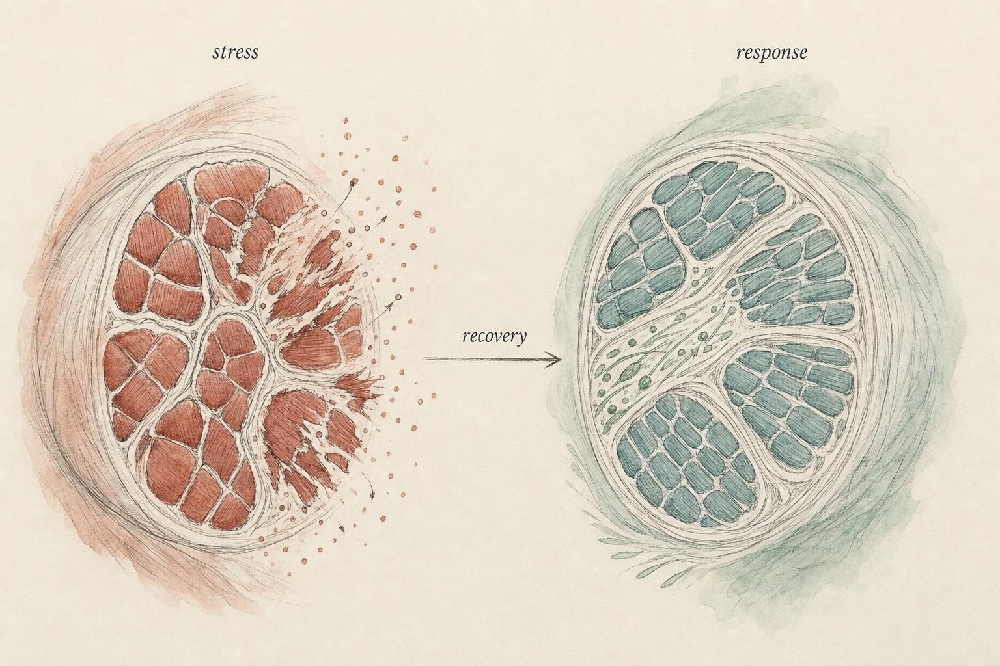
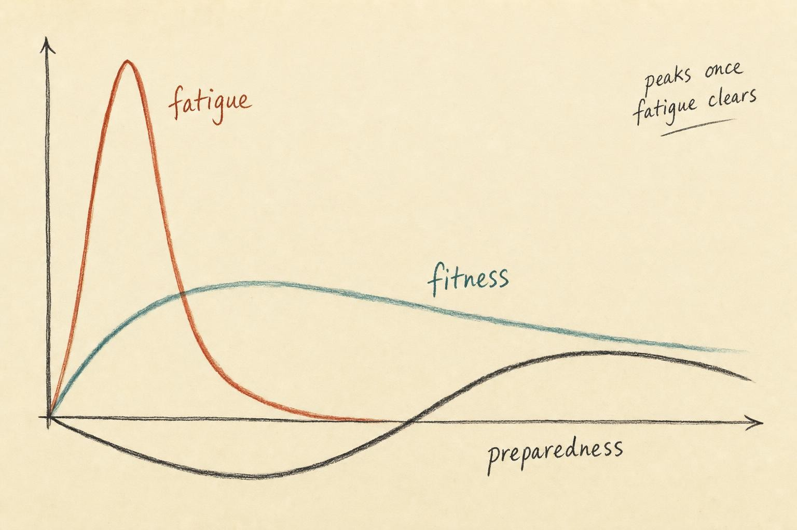

You Don't Grow in the Gym
The workout is the question. Recovery is the answer.
Walk out of a genuinely hard training session and measure yourself honestly, and you will find that you are, in almost every way that matters, worse than when you walked in. Your force output has dropped. Your muscle glycogen is depleted in the fibers you recruited. Micro damage has been registered along sarcolemma and cytoskeleton. Circulating markers of inflammation are climbing. Your nervous system is less willing to drive a maximal contraction. If the workout were where you "got fitter," this would make no sense at all, since you would leave every session stronger than you arrived, and progress would be visible on the spot.
It isn't, and it isn't. The single most durable misconception in training is that the workout is where progress is made. It is not the site of progress. It is the site of disruption, a deliberate, dosed insult to homeostasis. What you did in the gym is a stressor with a bill attached. Whether that bill gets paid back with interest, paid back exactly even, or never quite paid off at all is decided later, in the hours and days afterward, while you are doing something that looks a lot like nothing.
Throughout this chapter you will follow one learner, Priya, a 34 year old marketing manager who signed up for her first half marathon after a decade away from structured exercise. Priya is diligent almost to a fault. She read that consistency beats everything, decided that consistency meant never missing a day, and built a schedule of six training sessions a week stacked on top of a demanding job. Within two months her times had stopped improving. Her legs felt heavy on days they should have felt fresh. She assumed the fix was more effort, so she added a seventh day. Priya is not a patient in this course and she is not a case to be solved. She is a stand in for one of the most common and most avoidable errors in all of training, the belief that the workout itself is the engine of progress, and by the end of this chapter you will understand her plateau more clearly than she did at the time. Her story is a thread, not a diagnosis, and this course will be careful about that difference throughout.

Training disrupts; the body's reply is where structure changes." data-image-idx="0" style="display:block;max-width:100%;max-height:75vh;height:auto;width:auto;margin:0 auto;cursor:pointer;">Exercise as a controlled emergency
Start at the cellular level, because it makes the logic unavoidable. According to Hawley and colleagues (2014), in a landmark Cell review, exercise is "a major challenge to whole-body homeostasis, provoking widespread perturbations in numerous cells, tissues, and organs." That phrasing is worth pausing on. A challenge to homeostasis is, biologically, a small emergency. The body does not experience your set of squats as "progress." It experiences it as a perturbation it must respond to, and it mounts, in Hawley's words, "multiple integrated and redundant responses" whose job is to blunt the disturbance and restore order.
Here is the pivot on which this entire course turns: the response overshoots the restoration. The body does not merely repair back to the prior baseline. When the stressor is appropriately dosed and the conditions afterward are favorable, the reconstruction leaves the tissue slightly better prepared for the next encounter than it was for the last. According to Egan and Zierath (2013), reviewing exercise metabolism in Cell Metabolism, "repeated, episodic bouts of muscle contraction, associated with frequent exercise training, are potent stimuli for physiological adaptation." Crucially, they locate the machinery of that adaptation not during contraction but during the hours after it: transient pulses of messenger RNA (mRNA), the molecule that carries a gene's instructions to the cell's protein-building machinery, rise during recovery from an acute bout, driving the protein synthesis and structural remodeling whose "net effect is to promote optimal performance during a future challenge."
Read that last clause again: optimal performance during a future challenge. That is a molecular definition of what a lay observer might call getting fitter, and it is written entirely in the future tense. The adaptation is a bet the body places on the next stressor, funded by the recovery period after this one. According to Egan and Sharples (2022), in a more recent Physiological Reviews synthesis that draws on two decades of molecular work, skeletal muscle plasticity, meaning the remodeling of size, force, endurance, and contractile velocity, "is underpinned by activation and/or repression of molecular pathways and processes in response to each individual acute exercise session." Notice the timing embedded in that sentence. The stimulus opens the signaling; the recovery period is where the signaling gets read out into new protein. Nothing about that sequence happens on the gym floor.
It helps to make this concrete rather than abstract. A demanding lower-body session might drop your ability to produce maximal force by ten to thirty percent for the next day or two, deplete the glycogen stored inside the muscle fibers you worked hardest, and trigger a wave of local inflammatory signaling that peaks roughly a day or two later. None of that is damage in the sense of an injury. It is closer to a demolition crew clearing a site before construction begins. The construction itself, the part that actually raises your capacity, runs on a slower clock, largely while you sleep, eat, and otherwise get on with your day. A learner who only ever evaluates a program by how a session felt in the moment is judging a building by the sound of the wrecking ball, and missing the months of quiet framing that follow.
This is also the reason a sore muscle is a poor proxy for a productive one, a point this course will return to in far more detail in a later chapter devoted entirely to soreness. Soreness and adaptive signaling overlap, but they are not the same event, and they do not rise and fall together in any dependable way. A session can produce meaningful adaptive signaling with almost no next-day soreness at all, particularly once a learner has repeated a given movement pattern many times, because the tissue has already built some resilience to that specific stimulus. Conversely, a session built around an unfamiliar movement can produce dramatic soreness with a comparatively modest adaptive stimulus behind it, simply because the tissue was caught by surprise. Chasing soreness as a training goal, in other words, is chasing the wrong signal, and it is a habit worth unlearning early, before it quietly starts to steer program design in ways that have nothing to do with adaptation.
The stimulus, recovery, adaptation loop
We can now name the object that the rest of this course will study. Strip away the molecular detail and every training outcome runs through the same three-beat loop.
Stimulus. A training bout imposes a stress large enough to disturb homeostasis. This is the workout. Its immediate effect is negative. You are, transiently, worse.
Recovery. During the hours and days afterward, integrated repair and remodeling processes run. Given adequate raw materials, sleep, and time, they do not merely restore baseline, they overshoot it. This is where fitness is actually built.
Adaptation. If the recovery completes before the next stimulus arrives, the overshoot is banked as a durable, if modest, upward shift in capacity. Repeat the loop hundreds of times with the stress just ahead of the adapting baseline, and you have a training career.
Notice what this framing does to the word "recovery." In everyday usage recovery means the absence of training, rest, downtime, doing nothing. In the loop it means something almost opposite: recovery is the active biological work of adaptation. It is when the transcription happens, when the protein turns over, when connective tissue and mitochondria and neural drive get rebuilt to a higher spec. Nothing is more consequential and less visible. You are not idling between sessions. You are constructing the athlete who will show up to the next one.
This is also why the loop can fail from either direction, and why "just train more" is not a strategy on its own. Skip the recovery, piling the next stimulus onto an incomplete repair, and you never bank the overshoot. You accumulate the debt instead. Leave too much time and let the overshoot decay untouched, and you adapt, then quietly give the adaptation back before you build on it. Progress lives in a moving window, and the whole craft of programming is learning to find that window again and again, session after session, week after week.
A learner new to this idea often assumes the loop is a fixed metronome, that a body always needs exactly forty-eight hours, or exactly one week, before the next stimulus can land productively. It is not that simple, and the rest of this course exists partly to dismantle that assumption. The loop's timing depends on which tissue and which system you are asking about, how large the stimulus was, how trained the person already is, and how well the levers covered in the coming chapters, sleep, nutrition, and stress management among them, are being pulled. What stays constant is the shape of the loop itself: disruption, then a recovery period that does the actual building, then a banked gain if the next disruption is timed well. Learn to see that shape underneath every program you ever encounter, and a great deal of confusing, contradictory training advice starts to resolve into a much smaller set of underlying questions.
It is also worth naming that "stimulus" is not one thing. A heavy set of five squats, an easy thirty-minute jog, and a long walk are all stimuli, but they disturb different systems to different degrees and on different clocks. Heavy resistance work tends to produce a large, localized disruption in the muscle fibers involved, with a recovery timeline often measured in one to several days depending on training status. Sustained aerobic work spreads a smaller disruption across a wider set of systems, cardiovascular, metabolic, and muscular, and tends to clear faster unless the duration or intensity is unusually high. Skill-heavy or highly novel movement adds a further layer, taxing the nervous system's capacity to coordinate new patterns, which recovers on its own separate schedule. None of this means a learner needs to track every system individually to train well. It means the loop is best applied per stimulus, not as a single number describing an entire week, and a program that varies its stimuli sensibly is, in effect, spreading its recovery demands across several different clocks instead of loading all of them at once.
Supercompensation: a useful fiction
The smooth curve you just watched, dip, rebound above baseline, decay, has a name. Supercompensation is the classic textbook picture of the loop: performance drops after a session, recovers past the prior level during rest, and settles back if no new stimulus arrives. It is a wonderful teaching device precisely because it makes the timing problem visible. Land the next stimulus on the crest of the rebound and the crests stack. Land it in the trough and they sink.
You should hold this model in exactly one hand, though, and keep the other hand skeptical. Real physiology does not produce a single clean performance curve that everyone rides. Different systems adapt on different clocks. A metabolic enzyme profile, a tendon, a myofibril, and the neural drive to recruit them all recover and remodel over different timescales. The tidy sinusoid is a composite, an average of many overlapping processes drawn as if it were one. Treat the supercompensation curve as a working model, a scaffold for reasoning about timing, not a literal ledger of your body. Throughout this course we will keep grading our models this honestly, using them where they illuminate, flagging them where they oversimplify.
The practical value of the model shows up most clearly when a learner is deciding how to sequence a week rather than a single session. If the curve teaches anything durable, it is that timing is a variable to be managed on purpose rather than left to chance or to how motivated a person happens to feel on a given morning. A learner who trains the same muscle group hard on consecutive days, with no attention to where that tissue sits on its own recovery curve, is essentially gambling on whether the second session lands near a peak or in a trough. Spacing sessions with the curve in mind, even a rough, qualitative sense of it rather than a precise number, converts that gamble into a deliberate choice. This is the entire logic behind concepts such as split routines, hard and easy day alternation, and deload weeks, all of which will reappear in later chapters. They are different tactical answers to the same underlying question the supercompensation curve first poses: where, on the rebound, is the next stimulus going to land.
Selye's scaffold, and its critics
The intellectual ancestor of the supercompensation idea is Hans Selye's General Adaptation Syndrome (GAS), the observation that an organism exposed to a stressor passes through alarm, resistance, and, if the stressor overwhelms it, exhaustion. According to Cunanan and colleagues (2018), who mount a careful defense of GAS as the conceptual foundation for periodization, "disturbance to the state of an organism is the driving force for biological adaptation." That single sentence is the throughline of everything above: no disturbance, no adaptation. They are frank about the model's limits, conceding that "despite its imprecisions, the GAS has proven to be an instructive framework," instructive, not exact.
It would be intellectually dishonest to present GAS without its sharpest critique. According to Buckner and colleagues (2017), importing Selye directly into resistance training is a category error. Selye's original alarm, resistance, exhaustion sequence came from dosing laboratory animals with toxic stressors, cold, injury, poisons, not from progressive, adaptive exercise. The mechanistic story GAS tells about why we adapt, they contend, has thinner empirical support in the training context than its popularity suggests, and the more parsimonious principle may simply be progressive overload: apply a stress the tissue is not yet adapted to, recover, then apply slightly more. A learner does not have to resolve this debate to train well. A learner does have to hold GAS the right way, as an intuitive scaffold for the loop, not as a proven mechanism to compute programming from.
Successful training must involve overload, but also must avoid the combination of excessive overload plus inadequate recovery.
Meeusen et al. (2013), joint consensus statement of the European College of Sport Science (ECSS) and the American College of Sports Medicine (ACSM)
Fatigue, fitness, and preparedness
The supercompensation curve has a blind spot. It collapses everything into one line called "performance." But the reason performance behaves the way it does is that it is a difference between two hidden quantities that move on different timescales. This is the insight of the fitness-fatigue model, and it is the vocabulary you will use for the rest of this course.
According to Chiu and Barnes (2003), revisiting Banister's model for the strength and conditioning audience, performance at any instant is the net product of two aftereffects of training. Fitness is the positive adaptation, real, structural, and slow to decay. Fatigue is the negative residue of the recent training load, large in magnitude but comparatively fast to clear. Your measurable preparedness, what you could actually express if tested right now, is fitness minus fatigue.
This resolves the paradox we opened with. Immediately after a hard session, your fitness has genuinely gone up, the adaptive signaling is underway, yet your preparedness has cratered, because a large fatigue aftereffect is masking it. You are more fit and less able at the same moment, and there is no contradiction. As the fast fatigue term decays over the following days, the mask lifts, and the slower fitness gain is revealed as usable preparedness. Preparedness does not peak the instant fitness rises. It peaks once fatigue has cleared enough to unveil it.
Two consequences follow immediately. First, feeling wrecked the day after a session tells you about your fatigue, not your fitness, and those are different accounts entirely. Second, if you always test or compete under heavy accumulated fatigue, you will chronically underestimate the fitness you have actually built. The applied field has taken this seriously enough to build an entire monitoring discipline around it. According to Bourdon and colleagues (2017), in the international consensus on training-load monitoring, practitioners are encouraged to operationalize precisely this fitness, fatigue, preparedness vocabulary so they can quantify load and readiness rather than guess, and so the loop functions as intended and not as an accumulating stress spiral.
It is worth sitting with why this distinction matters so much in practice. A learner who schedules a demanding fitness test the day after the hardest session of the week is not measuring fitness at all. They are measuring fitness with a large, temporary fatigue penalty subtracted from it, and if the result looks disappointing, the natural but wrong conclusion is that the training is not working. The correct conclusion is usually that the timing of the test was poor. This is one of the most common and most fixable errors in self-directed training: mistaking a fatigue problem for a fitness problem, and responding to a timing issue as though it were a program failure.
The model also explains a pattern many learners notice but rarely name correctly, the sensation of feeling flat or heavy for a stretch of days that then resolves, almost overnight, into a session that feels unexpectedly light and fast. That is not luck, and it is not a sudden burst of new fitness arriving out of nowhere. It is the fatigue term finally decaying below the level of the fitness term that had already been quietly accumulating underneath it the whole time. Coaches sometimes describe this as a session where everything clicked, but the fitness-fatigue model offers a less mystical explanation, that the fog lifted and the gains that had already been earned became visible. Recognizing this pattern for what it is matters practically, because it keeps a learner from making a rash decision, cutting a program short or overhauling it entirely, during a stretch that is actually an ordinary and temporary trough in the fatigue curve rather than a sign that the underlying plan has failed.

Preparedness is a difference between two clocks, not a single line." data-image-idx="1" style="display:block;max-width:100%;max-height:75vh;height:auto;width:auto;margin:0 auto;cursor:pointer;">Why the same stimulus lands differently in different people
One question the loop invites almost immediately is why two learners can run an identical program and come away with very different results. If stimulus, recovery, and adaptation were a fixed equation, the outputs would be uniform. They plainly are not, and understanding why is essential before we can diagnose failures rather than guess at them.
Part of the answer is training history. A tissue that has already adapted through many prior cycles has less room left to overshoot on any single bout, and it also tends to recover faster from a given stimulus because the underlying repair machinery has itself been upregulated by repeated exposure. A beginner, by contrast, often shows large, fast gains early on precisely because almost any reasonable stimulus is novel enough to disturb homeostasis meaningfully. This is not a reason to chase novelty for its own sake later in a training career. It is a reason to expect the size of the banked overshoot to shrink as a learner becomes better trained, even when the effort involved stays high or climbs.
A second, larger part of the answer is that the recovery period is not a passive waiting room. It is actively shaped by everything else happening in a learner's life during those hours, and this is precisely the terrain the remaining chapters of this course exist to map. Sleep duration and quality change how much of the anabolic signaling described earlier in this chapter actually gets expressed. Total energy and protein intake determine whether the raw materials for rebuilding are even available. Psychological stress, illness, and poor recovery between unrelated life demands can all raise a background load that competes with training for the same limited recovery capacity. Two learners doing the same workout are rarely doing the same recovery, and the loop cares about the whole picture, not just the stimulus half of it.
A third factor, easy to overlook, is the size and novelty of the stimulus relative to what a learner's tissues are prepared to handle. A large jump in volume, intensity, or an unfamiliar movement pattern produces a proportionally larger disruption, which in turn demands a proportionally larger and slower recovery. Programming that increases difficulty gradually respects this relationship. Programming that lurches, a sedentary month followed by a sudden ambitious block, asks the recovery side of the loop to do in days what it may need weeks to accomplish, and that mismatch is where a great deal of frustration, and a fair amount of injury risk, tends to originate.
A fourth factor worth naming explicitly is age and life stage, since it is one of the questions learners ask most often. Recovery capacity does tend to shift across a lifespan, with tissue repair and hormonal signaling generally becoming somewhat slower with advancing age, and this is a fair, mechanistically grounded reason for an older learner to expect a program to look different rather than simply less ambitious. It is not, however, a reason to treat age as destiny. Training history, baseline health, sleep habits, and the other recovery levers covered later in this course typically explain far more of the variation between two learners of the same age than age explains on its own. A well-managed program for an older learner is not a smaller version of a younger learner's program. It is a program built with a clearer respect for the same loop this chapter has been describing throughout, with a bit more attention paid to spacing and a bit less tolerance for stacking stimulus on incomplete recovery.
Finally, recovery capacity itself is not a fixed number a learner is issued at birth and stuck with forever. It responds to training in its own right. A learner who has spent months or years exposing a system to well-managed stress tends to develop faster clearance of fatigue and a more efficient repair response than a learner encountering that same system for the first time, which is part of why advanced athletes can often absorb a training load that would flatten a beginner. This is not a license to rush the process. It is, if anything, an argument for patience: recovery capacity itself is one of the things this whole course is quietly training, one well-timed cycle of the loop at a time, and it builds on the same schedule as everything else, slowly, and mostly while you are not looking.
The classic failure mode: stimulus on incomplete recovery
Now we can diagnose the mistake that this whole course exists to help a learner avoid. It is not laziness. It is the opposite. It is the disciplined person who reasons, plausibly but wrongly, that if one hard session produces adaptation, then more hard sessions, closer together, must produce more. Stack stimulus on top of stimulus before the recovery completes, and the fatigue aftereffect never fully clears between bouts. Preparedness sinks lower and lower even as the person works harder and harder. The loop stops banking overshoot and starts accumulating debt.
The overtraining literature gives this a precise vocabulary. According to Meeusen and colleagues (2013), in the ECSS and ACSM consensus, a brief, deliberate overload followed by adequate recovery yields functional overreaching, a short-term performance dip that, once a learner backs off, rebounds to a higher level. This is a tool, not a mistake. It is the loop run slightly hot on purpose. Push further, though, more overload, less recovery, and you slide into non-functional overreaching, where the rebound stalls and performance stays suppressed for weeks with no upside to show for it. Push further still and you reach overtraining syndrome, whose keyword, the consensus notes, is "prolonged maladaptation" spanning biological, neurochemical, and hormonal regulation, a hole measured in months rather than days.
The difference between the beneficial version and the destructive version is not the size of the stimulus alone. It is the size of the stimulus relative to the recovery that follows it. That relationship, stress against recovery, over and over, is the axis every remaining chapter in this course is organized around. It is also exactly where Priya's plateau lived. Her stimulus had not become unreasonable overnight. What had changed was the ratio between what she was asking her body to absorb and the recovery time she was giving it to do so.
Case study: Priya and the plateau that was not toughness
Run Priya's plateau through this chapter and most of the confusion dissolves, not into a diagnosis, which is not this course's to give, but into a set of honest questions her schedule had never asked. Start with the decision to add a seventh day. Under the stimulus, recovery, adaptation loop, a stimulus that lands before the prior one's recovery has completed does not add to progress. It interrupts it. Priya had assumed more sessions meant more adaptation, when the honest accounting is that adaptation happens in the gap between sessions, not in the sessions themselves. Adding a seventh day did not give her body more opportunity to build. It gave her body less time to do the building the other six sessions had already set in motion.
Move to her rising resting heart rate and the heavy-legged feeling that had crept in by week nine. Neither of those is, on its own, a diagnosis of anything. But read against the fitness-fatigue model, they are exactly the signature you would expect from fatigue accumulating faster than it can clear: a large, still-growing negative aftereffect stacked on top of whatever fitness gains her training was producing, so that her true preparedness, fitness minus fatigue, kept sliding even while her underlying fitness may not have been the problem at all. She had, in effect, been testing herself under an ever-thickening fog of fatigue and concluding that the fog was proof her training had stopped working.
Then there is the plateau in pace itself. According to Meeusen and colleagues (2013), a performance dip under a deliberate, brief overload with adequate recovery is functional overreaching, a normal and even useful part of a well-built program. Priya's dip did not have adequate recovery attached to it. Extended across weeks with a seventh day layered on rather than backed off, her pattern matches the earlier stage of what the consensus describes as non-functional overreaching far more closely than it matches simple bad luck or insufficient effort. The honest read is not that Priya trained too little or cared too little. It is that she had quietly crossed from the loop's productive side to its unproductive side, and nothing in her felt sense of effort was built to warn her about that line, because from the inside both sides of it feel like hard work.
Here is the part that matters most, and it is where this chapter's boundary, discussed next, does real work. Nothing above tells us whether Priya's rising heart rate or persistent heaviness reflects ordinary non-functional overreaching that would resolve with a planned deload, or something else worth a professional look, such as anemia, an infection, or a cardiovascular question a heart rate trend alone cannot answer. This chapter cannot and does not sort that out, and neither should a learner sort it out alone from a framework built for training stress. What this chapter can do is exactly what it did for Priya: replace a vague, self-blaming story, that she must not be tough enough, with an accurate, mechanistic one, that she had likely tipped the ratio between stimulus and recovery too far, and a clear next step, back the training off, protect the recovery levers covered later in this course, and if the physical signs persist or worsen, take them to a clinician rather than to a training plan. That is a sturdier outcome than a guess, because it does not depend on Priya simply trying harder at the thing that was already the problem.
It is worth imagining, briefly, what a better-timed version of Priya's block might have looked like, not as a prescription, since a specific program for a specific person is outside what this chapter can responsibly offer, but as an illustration of the loop working as intended. Six sessions a week is not, by itself, an unreasonable target for a learner with her background. The problem was never the number of sessions in isolation. It was the absence of any planned recovery response once the early warning signs, the stalled pace, the rising morning heart rate, had already appeared. A version of the same block that treated week seven's plateau as information rather than as a challenge to push through, that traded the seventh session for an easier week and let the fatigue term catch up to the fitness she had already built, would likely have produced the rebound that functional overreaching is supposed to produce. The difference between a productive hard patch and a costly one is rarely the peak difficulty reached. It is what happens in the one or two decisions made immediately after the first honest signal appears.
The boundary of this course
Before we go further, one line must be drawn clearly, because it defines what this course is and is not. We reason here about training stress and the recovery levers a learner controls, the load applied, and the sleep, nutrition, spacing, and management that determine whether that load becomes adaptation. Across the next eight chapters we will grade the modalities honestly, keeping the good evidence and discarding the marketing.
What we will not do is interpret pain or dysfunction. A sharp or persistent pain, a joint that does not move the way it should, a resting heart rate trend that keeps climbing, a symptom that outlasts the ordinary rhythm of training fatigue, these are not puzzles to solve with a recovery lever. They are signals that warrant evaluation by a qualified professional. Treating them as programming problems is exactly the kind of category error we just warned against with GAS. Throughout this course, when a learner meets that boundary, the correct move is to route the question to someone credentialed to answer it, not to reason about it from a model built for training stress. Everything that follows lives on the training side of that line.
This boundary is not a formality tacked onto the end of a chapter. It follows directly from the physiology already covered. The fitness-fatigue model explains why a learner might feel worse before feeling better, and the overreaching continuum explains how a normal dip can, if mismanaged, slide into something that takes months to resolve. Neither model was built to distinguish ordinary accumulated fatigue from an underlying medical issue that happens to produce similar symptoms, and neither should be stretched to do a job it was never designed for. Knowing the mechanism well enough to recognize when a question has left the mechanism's territory is not a limitation of this course. It is the single most protective habit a learner can take from it, because it is what keeps sound physiology from being misapplied to a situation it cannot actually explain.
Key Takeaways
- The workout is a controlled disruption that temporarily makes you worse. Progress is the body's overshooting response to that disruption during recovery, not the disruption itself.
- The stimulus, recovery, adaptation loop is the object of the entire course. Adaptation is banked only when recovery completes before the next stimulus lands.
- Supercompensation and Selye's General Adaptation Syndrome are useful working scaffolds for reasoning about timing, instructive despite their imprecisions, and not literal mechanisms to compute from (Cunanan et al., 2018; Buckner et al., 2017).
- Preparedness equals fitness minus fatigue. Immediately after a hard session fitness has risen, yet preparedness is low because a large, fast-decaying fatigue aftereffect masks it. Preparedness peaks only once fatigue clears (Chiu & Barnes, 2003).
- The same stimulus lands differently across learners because training history, sleep, nutrition, life stress, and the novelty of the stimulus all shape how well the recovery half of the loop can do its job.
- The classic failure mode is stacking stimulus on incomplete recovery, sliding from functional overreaching into non-functional overreaching and, ultimately, prolonged maladaptation (Meeusen et al., 2013).
- Pain, dysfunction, or a persistently climbing heart rate trend is a signal for professional evaluation, never something to interpret with a recovery lever alone.
If recovery is where adaptation actually happens, then the question becomes ruthlessly practical: what governs the quality of that recovery window? We begin with the single most powerful and most neglected lever, sleep, and ask what the evidence really shows about how the night after training shapes the person who wakes up.
References
Bourdon, P. C., Cardinale, M., Murray, A., Gastin, P., Kellmann, M., Varley, M. C., Gabbett, T. J., Coutts, A. J., Burgess, D. J., Gregson, W., & Cable, N. T. (2017). Monitoring athlete training loads: Consensus statement. International Journal of Sports Physiology and Performance, 12(s2), S2-161 to S2-170. https://doi.org/10.1123/IJSPP.2017-0208
Buckner, S. L., Mouser, J. G., Dankel, S. J., Jessee, M. B., Mattocks, K. T., & Loenneke, J. P. (2017). The General Adaptation Syndrome: Potential misapplications to resistance exercise. Journal of Science and Medicine in Sport, 20(11), 1015 to 1017. https://doi.org/10.1016/j.jsams.2017.02.012
Chiu, L. Z. F., & Barnes, J. L. (2003). The fitness-fatigue model revisited: Implications for planning short- and long-term training. Strength and Conditioning Journal, 25(6), 42 to 51. https://doi.org/10.1519/1533-4295(2003)025<0042:TFMRIF>2.0.CO;2
Cunanan, A. J., DeWeese, B. H., Wagle, J. P., Carroll, K. M., Sausaman, R., Hornsby, W. G., Haff, G. G., Triplett, N. T., Pierce, K. C., & Stone, M. H. (2018). The General Adaptation Syndrome: A foundation for the concept of periodization. Sports Medicine, 48(4), 787 to 797. https://doi.org/10.1007/s40279-017-0855-3
Egan, B., & Sharples, A. P. (2022). Molecular responses to acute exercise and their relevance for adaptations in skeletal muscle to exercise training. Physiological Reviews, 103(3), 2057 to 2170. https://doi.org/10.1152/physrev.00054.2021
Egan, B., & Zierath, J. R. (2013). Exercise metabolism and the molecular regulation of skeletal muscle adaptation. Cell Metabolism, 17(2), 162 to 184. https://doi.org/10.1016/j.cmet.2012.12.012
Hawley, J. A., Hargreaves, M., Joyner, M. J., & Zierath, J. R. (2014). Integrative biology of exercise. Cell, 159(4), 738 to 749. https://doi.org/10.1016/j.cell.2014.10.029
Meeusen, R., Duclos, M., Foster, C., Fry, A., Gleeson, M., Nieman, D., Raglin, J., Rietjens, G., Steinacker, J., & Urhausen, A. (2013). Prevention, diagnosis and treatment of the overtraining syndrome: Joint consensus statement of the European College of Sport Science (ECSS) and the American College of Sports Medicine (ACSM). European Journal of Sport Science, 13(1), 1 to 24. https://doi.org/10.1080/17461391.2012.730061